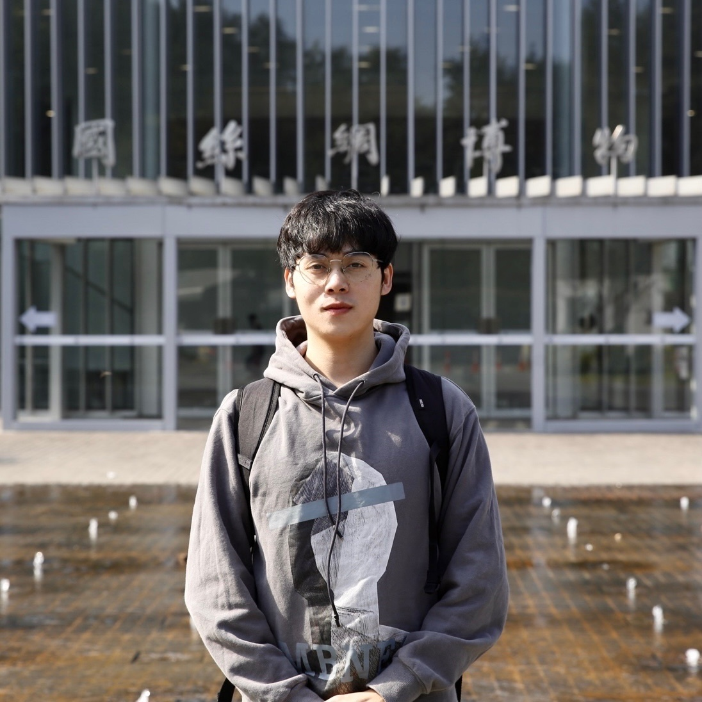

|

|
Jianting Zhang
Ph.D. Student
Department of Computer Science
Purdue University
Email: antfinancialyujian [at] gmail [dot] com
Github
Google Scholar
|
Bio
I am a Ph.D. student in the department of Computer Science at Purdue University. I am very fortunate to be advised by
Prof. Aniket Kate
at
FreedomLab.
Previously, I graduated from Sun Yat-sen University, working with Prof. Wuhui Chen and Prof. Zibin Zheng.
I am particularly interested in blockchain, distributed system and protocol security. My goal is to bridge the gap between academic and industrial research on blockchains.
In addition to doing research, I also enjoy singing. My friends call me Purdue's
Eason Chan. My famous song - Half Moon Serenade, however, is created by another Cantonese singer Hacken Lee.
|
Publications
-
Front-running Attack in Sharded Blockchains and Fair Cross-shard Consensus
Jianting Zhang, Wuhui Chen, Sifu Luo, Tiantian Gong, Zicong Hong, Aniket Kate
To appear at 31st Network and Distributed System Security Symposium (NDSS), 2024.
-
PROPHET: Conflict-Free Sharding Blockchain via Byzantine-Tolerant Deterministic Ordering
Zicong Hong, Song Guo, Enyuan Zhou, Jianting Zhang, Wuhui Chen, Jinwen Liang, Jie Zhang, Albert Zomaya
42nd IEEE International Conference on Computer Communications (INFOCOM) , 2023.
-
Proactive Look-Ahead Control of Transaction Flows for High-Throughput Payment Channel Network
Wuhui Chen, Xiaoyu Qiu, Zicong Hong, Zibin Zheng, Hong-Ning Dai, Jianting Zhang
13th ACM Symposium on Cloud Computing (SoCC) , 2022.
-
Benzene: Scaling Blockchain with Cooperation-Based Sharding
Zhongteng Cai, Junyuan Liang, Wuhui Chen, Zicong Hong, Hong-Ning Dai, Jianting Zhang, Zibin Zheng
IEEE Transactions on Parallel and Distributed Systems (TPDS) , 2022.
-
SkyChain: A Deep Reinforcement Learning-Empowered Dynamic Blockchain Sharding System
(Best Paper Runner-up Award)
Jianting Zhang*, Zicong Hong*, Xiaoyu Qiu, Yufeng Zhan, Song Guo, Wuhui Chen
49th International Conference on Parallel Processing (ICPP) , 2020.
|
In process
-
Efficient Execution of Arbitrarily Complex Cross-shard Contracts for Blockchain Sharding (under review)
Jianting Zhang, Wuhui Chen, Zicong Hong, Gang Xiao, Linlin Du, Zibin Zheng
-
Scaling Blockchain via Dynamic Sharding (under review)
Jianting Zhang, Zicong Hong, Xiaoyu Qiu, Yufeng Zhan, Song Guo, Wuhui Chen
-
SmartChain: A Dynamic and Self-Adaptive Sharding Framework for IoT Blockchain (under review)
Ting Cai, Wuhui Chen, Jianting Zhang, Zibin Zheng
|
Poster
-
A Fair Cross-shard Consensus in Distributed Sharding Systems (GCASR'23)
Jianting Zhang, Aniket Kate
|
Projects
-
Shard synchronization - an efficient synchronization protocol for blockchain sharding systems [code]
-
BFT recovery - the recovery implementation for Tendermint [code]
-
SkyChain - a simulation for DRL-based blockchain performance [code]
|
Awards
-
Graduate Student with Honors
-
2020 ICPP Best Paper Award Runner-up
-
2020 National Scholarship for Graduate Students
|
Experience
|
Services
- Reviewer
- IEEE/ACM Transactions on Networking
- IEEE Transactions on Computers
|
|
Copyright © 2022-2023 Jianting Zhang, Purdue University.